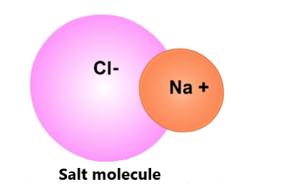

Electric force. Oppositely-charged atomic particles (protons and electrons) attract each other. Similarly-charged particles repel (or push each other away). We call these forces between charged particles that cause them to attract or repel "electric forces."
Like gravitational and magnetic forces, the electric force acts at a distance. In other words, the charged particles do not have to touch to be attracted or repulsed by the electric force. They can be far from each other and still affected by the electric force.In the pictures below, the arrows show the direction of the electric force on each particle caused by the other charged particle.

The electric force is what causes electrons and protons to attract each other to form atoms.
The electric force between electrons keeps electrons from getting too close to each other in atoms.
Electric forces also affect atoms. Electric forces also cause oppositely-charged atoms to attract each other and similarly-charged atoms to repel. For example, a sodium atom (Na) may lose an electron and become positively charged (because it has one more proton than electron). A chlorine atom (Cl) may gain an electron and become negatively charged (because it will have one more electron than proton). Because the Na+ and Cl- atoms have opposite electric charges, they will attract each other. As a result, a NaCl (table salt) molecule will form. This is shown in the picture below.
Everyday example of electric force. Aside from being made of atoms, you almost certainly have experienced electric forces personally. For example, if you rub a balloon on your hair, your hair will "stick" to the balloon (see the picture below). This is because when the balloon material rubbed your hair, electrons from your hair moved to the balloon. So, now the balloon is negatively charged (represented as red negative signs in the picture on the right). Your hair is positively charged (represented as positive signs). So your hair will be attracted to the balloon through the force.

When you're done with this game, Click the "Chemical & Physical Reactions" button above to see the list of units related to your research question.


***Note for Teachers: You can access more information about this website and find other resources for science inquiry on the ISP Tutor website.
©2021 Klahr Lab, Carnegie Mellon University. All Rights Reserved
Carnegie Mellon University | Dept. of Psychology | 5000 Forbes Ave. | Pittsburgh, PA 15213 The TED project was funded in part by the Institute of Education Science (IES), Grant R305H060034, and in part by the National Science Foundation, Grant SBE035442. The ISP Tutor project is funded by IES, Grant R305A170176.
The research reported here was supported by the Institute of Education Sciences, U.S. Department of Education, through Grant R305A170176 to Carnegie Mellon University. The opinions expressed are those of the authors and do not represent views of the Institute or the U.S. Department of Education.